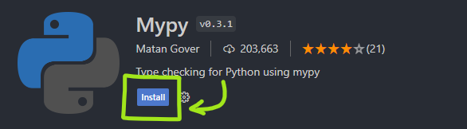

Python is celebrated for its simplicity and flexibility, but these features come with a trade-off: a lack of built-in type safety. This can lead to bugs that are hard to track down, especially in large codebases.
Fortunately, Python 3.5 introduced type hints, which can be enforced using tools like Mypy to bring type safety to your code. In this post, we’ll explore how to leverage type annotations and Mypy to write more reliable Python code.
What is Type Safety?
Type safety ensures that variables in your program are only used in ways that are compatible with their types. For example, if you declare a variable as an integer, type safety ensures you don’t accidentally use it as a string or a list, preventing many common bugs at compile-time rather than at runtime.
Why Use Type Annotations in Python?
- Error Detection: Catch type-related errors before running your code.
- Documentation: Make your code more readable and self-documenting.
- IDE Support: Improved code completion and inspection in modern IDEs.
- Refactoring: Safer and easier refactoring.
Introducing Type Annotations
Type annotations in Python are a way to explicitly declare the type of a variable. Here’s a simple example:
def add(a: int, b: int) -> int:
return a + b
In this function, a and b are annotated as integers, and the function is expected to return an integer.
Common Type Annotations
- Basic Types:
int,float,str,bool - Collections:
List[int],Dict[str, int],Tuple[int, str] - Optional Types:
Optional[int](which is shorthand forUnion[int, None]) - Custom Types: You can define your own types using classes and then use them in type annotations.
Using Mypy for Type Checking
Mypy is a static type checker for Python. It checks your code against the type annotations you’ve written and reports any mismatches.
-
Installation: You can install Mypy using pip:
pip install mypy -
Running Mypy: To check your code, simply run:
mypy your_script.py -
Configuring Mypy: You can configure Mypy using a
mypy.inifile for more complex projects.
Example: Type-Checked Python Code
Let’s consider a more comprehensive example. Suppose you are writing a function that processes a list of user data.
from typing import List, Dict
def process_users(users: List[Dict[str, str]]) -> None:
for user in users:
print(f"User {user['name']} has email {user['email']}")
# Example usage
users = [{'name': 'Alice', 'email': 'alice@example.com'}, {'name': 'Bob', 'email': 'bob@example.com'}]
process_users(users)
You can run Mypy to check this script:
mypy script.py
If there are any type mismatches, Mypy will report them.
Mypy + Visual Studio Code = <3

For me the best way to make use of the huge benefits type hints provide us is to use mypy directly in Visual Studio Code. Its as easy as searching the plugin “Mypy” in the plugin section and installing it.
(Make suer to already have mypy installed via pip as described earlier in this post)
To force yourself in new projects to always use type annotations in your code i really like to add the following additional flags to the Plugin via the settings page in VS-Code:
- “strict”: This flag ensures that Mypy will enforce stricter type checking, which can catch more potential issues and enforce better type discipline.
- “disallow_untyped_calls”: This flag will make Mypy flag any calls to functions without type annotations, encouraging you to ensure every function has proper type hints.
- “disallow_untyped_defs”: This setting ensures that all functions within your code must have type annotations, preventing you from accidentally leaving them out.
- “disallow_incomplete_defs”: This flag requires that all function definitions are complete with both argument and return type annotations.
Advanced Type Annotations
-
Generics: You can define generic types using the
TypeVarandGenericclasses. -
Type Aliases: Simplify complex type definitions with aliases.
from typing import List, Dict User = Dict[str, str] UsersList = List[User] def process_users(users: UsersList) -> None: # same implementation -
Callable Types: Specify types for functions that are passed around as arguments.
Conclusion
Type-safe programming in Python using type annotations and Mypy can significantly enhance the robustness and maintainability of your code. By catching type errors early, you save time debugging and ensure that your programs behave as expected.